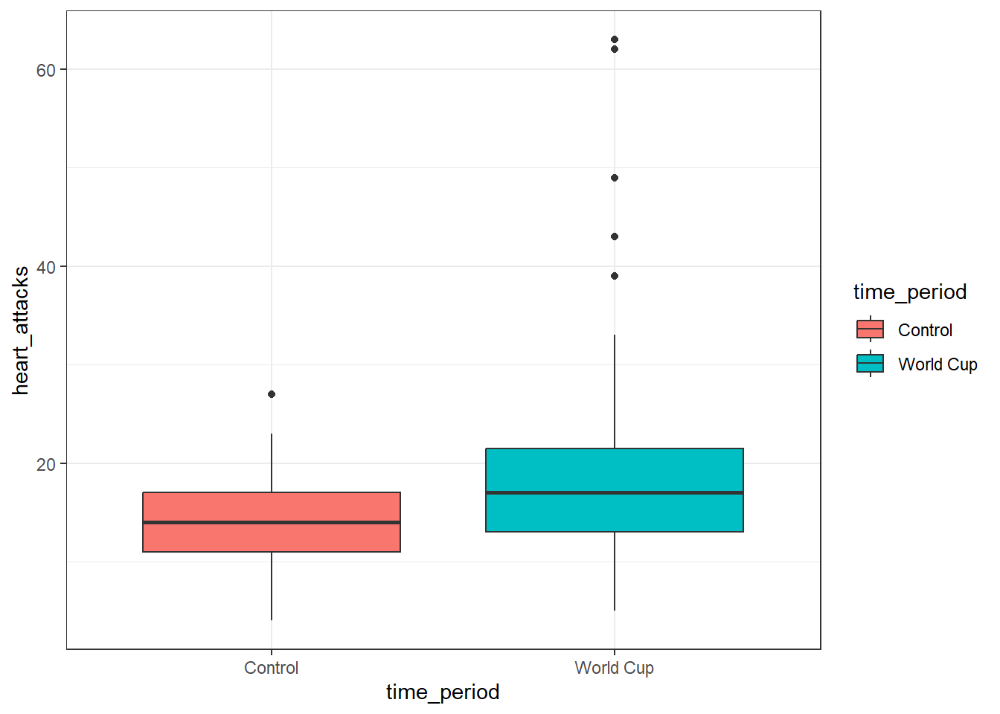

# Load Libraries
library(tidyverse)
library(mosaic)
library(rio)
library(car)
# Load Data
fifa_heart_attacks <- import("https://byuistats.github.io/M221R/Data/fifa_heart_attacks.xlsx")Independent Two-sample T-test
Introduction
The proper analysis for situations with a quantitative response variable and a categorical explanatory variable with exactly 2 levels is called 2-Sample T-test.
Hypothesis Test
Recall that the generic null hypothesis is that there is NO RELATIONSHIP between \(x\) and \(y\). For a categorical explanatory variable and a quantitative response variable, this means that there would be no differences between the group means of each category.
The null and alternative hypotheses are always the same for a 2-sample t-test comparing groups is:
\[H_o: \mu_1 = \mu_2\]
The alternative hypothesis will depend on the context of the problem. Sometimes we may suspect \(\mu_1\) to be LESS than \(\mu_2\). Other times we may suspect that \(\mu_1\) to be GREATER than \(\mu_2\). In some situations, we don’t know which one is bigger, so we can frame the alternative as \(\mu_1\) is NOT EQUAL to \(\mu_2\).
Each of these can be written:
\[H_a: \mu_1 < \mu_2\] \[H_a: \mu_1 > \mu_2\] \[H_a: \mu_1 \ne \mu_2\]
Which one we use will depend on context of the research question.
Test Statistic
The Test Statistic for testing the relationship between a quantitative response variable and a categorical explanatory variable with >2 categories is called \(t\).
SIGNAL: The difference between the 2 group means.
NOISE: The combined standard error of the 2 groups. This is calculated by adding the variances of both groups and then taking the square root. This is not too different than the estimated standard error for the mean, which is \(\frac{s}{\sqrt{n}}\), but we’re combining them for both groups.
\[ t=\frac{\bar{x}_1 - \bar{x}_2}{\sqrt{\frac{S_1^2}{n_1} + \frac{S_2^2}{n_2}}}\]
Cholesterol Drug
Imagine you’re comparing a new cholesterol-reducing drug compared with a standard treatment. If our new drug works, we would expect the average cholesterol for those taking the new drug would be lower than the standard treatment.
The null hypothesis is that both treatments are equivalent, on average. This is typically expressed as a statistical hypothesis by stating that the average cholesterol is the same regardless of which treatment you use.
We would express this as:
\[H_0: \mu_{\text{new}} = \mu_{\text{current}}\] PONDER: Can you see the connection between the treatment means being the same and “no relation” between treatment and cholesterol?
The alternative hypothesis for this \(t\)-statistic is:
\[H_a: \mu_{\text{new}} < \mu_{\text{current}}\] because we expect the average cholesterol measurements for those taking the new drug will be lower than with the current drug.
If the null hypothesis were true, any differences observed between the treatment means should be due to random variation or “noise” inherent in the cholesterol measurements.
If the null hypothesis is false, we would expect the difference between the treatment group means to be big relative to the experimental variation.
A large \(t\)-statistic means the group averages are much more spread out than the natural variability in cholesterol measurements.
Additional Examples
- Comparing salaries of men and women (randomly sample men and women separately); the null hypothesis is that biosex has no impact on salary.
- Comparing average GPA of Math majors and Economics majors (randomly select from each population); the null hypothesis is that major has no impact on GPA.
Analysis in R
To perform a 2-sample independent \(t\)-test in R, we will use the t.test() function with the familiar formula data$response ~ data$explanatory and specify the direction of the alternative hypothesis (\(><\ne\))
t.test(data$response_variable ~ data$grouping_variable, alterntive = "less")
The alternative = argument in the t.test() function can be: “less”, “greater”, or “two.sided”.
When specifying an alternative hypothesis in R, a reference group must be defined. This serves as the baseline for comparison. R will assess how the mean of the second group differs from that of the first.
NOTE: By default, R decides which group is the reference group alphabetically. Whichever category label is first alphabetically is the reference group.
EXAMPLE: If my explanatory variable is sex, and they are labeled “Female” and “Male”, then “Female” would be the reference group. If I suspect that Females had smaller feet than males I would use alternative = "less".
Checking Requirements
Recall that a sample mean is approximately normal if:
- The source population is normally distributed
- The sample size, \(n \ge 30\)
For a 2-sample t-test, we must check that this is true for both samples. If both sample sizes are bigger than 30 then we can trust the CLT and the \(p\)-value from t.test().
If the sample sizes are small, we can make a qqPlot() for both groups:
qqPlot(data$response_variable ~ data$explanatory_variable)Practice Together
Does the frequency of heart attacks increase during the World Cup?
The number of heart attacks in the Greater Munich area was measured before and during the period when Germany hosted the FIFA World Cup. This study was published in the New England Journal of Medicine
Read in Data
Review Data
Look at the data.
Create summary statistics tables of the number of heart attacks for each group.
Create a side-by-side boxplot for the during the World Cup and the Control.
ggplot(fifa_heart_attacks, aes(x = time_period, y = heart_attacks, fill=time_period)) +
geom_boxplot() +
theme_bw()
Do you notice any outliers or data that may need to be omitted for analysis?
Check to see if the means from both groups are normally distributed:
- Is n > 30 for both groups?
- Create a qqPlot()
qqPlot(fifa_heart_attacks$heart_attacks ~ fifa_heart_attacks$time_period)
QUESTION: Do the observations from both groups look normally distributed?
ANSWER:
QUESTION: Is this a cause for concern? Why or why not?
ANSWER:
Perform the appropriate analysis
Hypothesis Test
Are the individuals in each group dependent or independent of each other?
Write out your null and alternative hypotheses.
\(H_o: \mu_{Control} = \mu_{\text{World Cup}}\)
\(H_a: \mu_{Control} > \mu_{\text{World Cup}}\)
QUESTION: Which group is considered group 1 and which is group 2 in R?
ANSWER:
Check the alphabetical order:
unique(fifa_heart_attacks$time_period)[1] "Control" "World Cup"Perform the appropriate t-test.
t.test(fifa_heart_attacks$heart_attacks ~ fifa_heart_attacks$time_period, alternative = "less")
Welch Two Sample t-test
data: fifa_heart_attacks$heart_attacks by fifa_heart_attacks$time_period
t = -4.6172, df = 106.43, p-value = 5.464e-06
alternative hypothesis: true difference in means between group Control and group World Cup is less than 0
95 percent confidence interval:
-Inf -3.174984
sample estimates:
mean in group Control mean in group World Cup
14.04396 19.00000 QUESTION: What is your test statistic?
ANSWER:
QUESTION: What is your p-value? ANSWER:
QUESTION: State your conclusion: ANSWER:
Your Turn
New Zealand Rugby
Rugby is a popular sport in the United Kingdom, France, Australia, New Zealand and South Africa. It is gaining popularity in the US, Canada, Japan and parts of Europe. Some of the rules of the game have recently been changed to make play more exciting. In a study to examine the effects of the rule changes, Hollings and Triggs (1993) collected data on some recent games.
Typically, a game consists of bursts of activity that terminate when points are scored, if the ball is moved out of the field of play or if a violation of the rules occurs. In 1992, the investigators gathered data on ten international matches which involved the New Zealand national team, the All Blacks. The first five games were the last international games played under the old rules, and the second set of five were the first internationals played under the new rules.
For each of the ten games, the data give the successive times (in seconds) of each passage of play in that game.
You will investigate whether the mean duration of the passages has dropped under the new rules.
Use a level of significance of 0.01.
Load the Data
rugby <- import("https://byuistats.github.io/M221R/Data/quiz/R/nz_rugby.csv")Explore the Data
Create a side-by-side boxplot for the amount of reported passage of play before and after the rule changes.
Add a title and change the colors of the boxes.
QUESTION: What do you observe?
Create a table of summary statistics of play time for before and after the rule change. (favstats()):
Perform the Appropriate Analysis
Hypothesis Test
QUESTION: State your null and alternative hypotheses:
Ho:
Ha:
NOTE: The default for R is to set group order alphabetically. This means Group 1 = NewRules
Compare the the time per play under the new and old rules:
qqPlot()Error in qqPlot.default(): argument "x" is missing, with no defaultQUESTION: Do the observations from both groups look normally distributed?
ANSWER:
QUESTION: Is this a cause for concern? Why or why not?
ANSWER:
Perform a t-test.
QUESTION: What is the value of the test statistic?
QUESTION: What is the p-value?
QUESTION: What do you conclude?
Chronic Obstructive Pulmonary Disease Treatment
The CDC provided the following information about COPD:
“Chronic obstructive pulmonary disease, or COPD, refers to a group of diseases that cause airflow blockage and breathing-related problems. It includes emphysema and chronic bronchitis. COPD makes breathing difficult for the 16 million Americans who have this disease. (Source: https://www.cdc.gov/copd, accessed December 1, 2022.)”
A study was conducted in which COPD patients walked as many steps as they could. They were then randomly assigned to either a hospital-based or community-based treatment program. At the conclusion of the program, the number of steps the patients could walk without stopping was measured again. The difference in the number of steps (post - pre) is recorded in the data frame copd_rehab.
Read in the data
copd <- import("https://byuistats.github.io/M221R/Data/copd_rehab.xlsx") %>% pivot_longer(cols=c("community", "hospital"), names_to = "Treatment", values_to = "Steps") %>% select(Treatment, Steps) %>% arrange(Treatment)Review the data
Create side-by-side boxplots and summary statistics for the community and hospital groups:
Check to see if the means are expected to be normally distributed.
Can trust the CLT for our test statistic and P-value?
Perform the appropriate analysis
Hypothesis Test
State your null and alternative hypotheses.
Ho:
Ha:
Which group is considered group 1 in this data?
Run the appropriate t-test.
#t.test()State your conclusion about the hypothesis test.